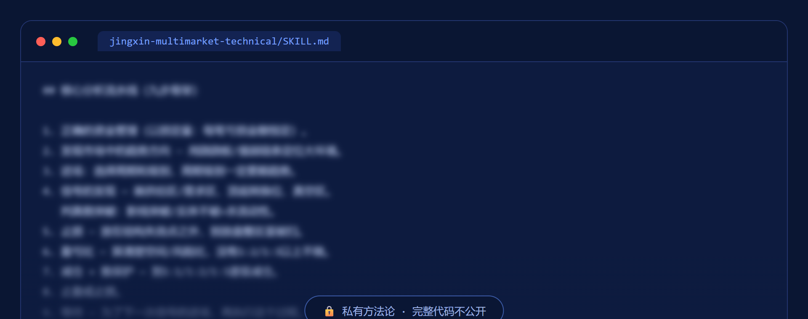

加密/外汇/黄金/原油/美股/美债一屏对照，供需订单块结构 + 按波动率定仓位，给出带止损目标位盈亏比的交易级判断。
这套流水线在做什么、怎么守规矩。
输入一个品种/一段行情，输出结构判断（供给区/需求区/顶底转换/真空区）+ 进场/止损/目标/盈亏比/仓位的交易级结论。
资金管理→定位趋势→选周期级别→找信号（供需区/真空区/假突破识别）→止损→盈亏比→减仓推保护→止盈止损→等待下一次信号。仓位按波动率反向配置。
强调概率判断、坦诚认错、严格止损；不是投资建议，交易有风险，决策与后果自负。
这是我的私有方法论资产，只展示模糊的一小段代码证明真实存在，完整逻辑不公开。
